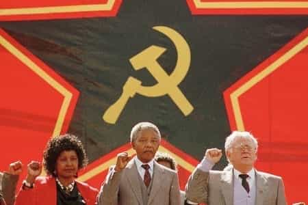

< < < Back
Nelson Mandela Has Left A Legacy Of Utter Failure In South Africa – Return Of Kings
Most people believe Nelson Mandela was jailed simply for being a dissident. Actually, he orchestrated a full-scale bombing campaign. The music scene brought him to international celebrity status; a testament to the effectiveness of media power. The government offered to release him if he renounced violence, but he refused.
Despite all this, he received an obscene number of awards and honors because of obsequious virtue signaling. (Did Ted Kaczynski ever get an honorary degree or have a street named after him? How about Timothy McVeigh?) If all that wasn’t enough, the Robben Island prison where Mandela stayed became a World Heritage Site.
Mandela’s Communist beliefs

Winnie and Nelson Mandela by their friend Joe Slovo, South African Communist Party leader
It’s well known that Mandela was a leader of the African National Congress, ostensibly a social democratic party advocating peaceful change. It’s less well known that the ANC is allied with the South African Communist Party and the Congress of South African Trade Unions, and its paramilitary arm was Mandela’s terrorist organization Umkhonto we Sizwe. Few are aware even now that this avuncular teddy bear, later to become the President of South Africa, was a closet Communist. Mandela passed the “duck test” with flying colors, but that’s not all.
Recently I discovered a treasure trove of documentation about Communism, and in it is a manuscript called “How to be a good Communist“. Much like Antonio Gramsci, Mandela made use of his prison time to write in support of his cause. Here’s what Mandela promised:
Communists fight for a world where there will be no unemployment, no poverty and starvation, disease and ignorance. […]
Under a Communist Party Government South Africa will become a land of milk and honey. Political, economic and social rights will cease to be enjoyed by Whites only. They will be shared equally by Whites and Non-Whites. There will be enough land and houses for all. There will be no unemployment, starvation and disease.
Workers will earn decent wages; transport will be cheap and education free. There will be no pass laws, no influx control, no Police raids for passes and poll tax, and Africans, Europeans, Coloureds and Indians will live in racial peace and perfect equality.
The victory of Socialism in the U.S.S.R., in the Peoples Republic of China, in Bulgaria, Czechoslovakia, Hungary, Poland and Rumania, where the living conditions of the people were in many respects similar and even worse than ours, proves that we too can achieve this important goal.
Actually, I found it to be a pretty good primer on Communist theory, at least from their perspective. However, Mandela’s knowledge of actual conditions in Warsaw Pact nations and Mao’s China was a bit sketchy. Let’s see how things worked out after Mandela became President in 1994 and had the opportunity to implement his ideas.
First, a very brief history
Most victims of the modern educational system believe the evil Dutch and British conquered South Africa and took away all the farms, roads, mines, hospitals, factories, and skyscrapers from the peace-loving Zulus. Then they implemented apartheid to be a bunch of dicks. The truth is a little different.
The Dutch Cape Colony was established in 1652. Upon arrival, they found a very sparsely populated land. The few inhabitants were the San and Khoikhoi (then called Bushmen and Hottentots). The various Bantu-speaking tribes arriving later from the north were as genetically different from them as American Indians and East Asians. So, the now-majority Zulu, Ndebele, Xhosa, and kindred peoples were not there first, contrary to popular opinion. The first Bantu contact with the Dutch-descended Afrikaners occurred around 1770.
South Africa became a pretty rough neighborhood. The Bantu presence greatly expanded over the years. In 1816, Shaka Zulu assumed rule over his tribe and became the African version of Genghis Khan. That certainly wasn’t the last of intertribal warfare. Eventually most of the original Khoisan population was slaughtered or absorbed. Blacks and Whites fought too, most famously with the British-Zulu conflict. During the early days, British colonial interests clashed with the Afrikaners, eventually leading to the Boer Wars, the second ending in 1902. After that, open warfare ceased, though low-level conflicts still occurred.
The Black population increased dramatically, thanks to cessation of constant warfare and access to Western medicine. During the 1940s, Blacks became a majority, eventually greatly surpassing the White population. The British instituted apartheid, involving segregation. Less well known is that it also promoted sovereignty for tribal homelands, which would’ve been a positive development if carried to fruition.
Colonialism gradually ended; the European powers were exhausted by WWII, and the ideological climate was changing. Many African governments became brutal kleptocratic regimes, often with Marxist leanings. Infrastructure began crumbling, and Western aid often fattened the bank accounts of the dictators, or was misused (most notably with Ethiopia). This is one reason why Africa is still a mess. Immigrants flooded South Africa; they considered living under apartheid better than kleptocratic misrule. It was Africa’s only First World country, and its best ordered, despite its unpopular regime.
South Africa declared independence from Britain in 1960, but still under White control. In 1965, Rhodesia followed suit, but granted voting rights to everyone following guerrilla warfare and international sanctions. Then Rhodesia, renamed Zimbabwe, became another Marxist-flavored kleptocracy, led by terrorist Robert Mugabe since 1980. In 1991, South Africa abolished apartheid. In 1993, they held a referendum, and the Whites (apparently suffering from a short memory) extended voting rights to a hostile majority population.
The ANC’s rise and the failure of Mandela
Unsurprisingly, Nelson Mandela won the 1994 election, as practically demanded by “international opinion”. Afterward, the ANC won every election since then. Let’s see how Mandela’s predictions of eradicating social problems turned out, after he assumed power and the ANC (still allied with the Communist Party) got a permanent tenure.
Unemployment: During the early 1990s, unemployment was a steady 16%. That would’ve been lower without international sanctions; that hurt the common people. In 1996, unemployment spiked up, reaching 29% in 2003. Official figures are about 25% for the last few years. This wasn’t an improvement. Inflation is way up too, worse than Carter’s or Obama’s stagflation.
Other than that, racial preferences in employment didn’t end with apartheid; rather, they switched direction. (Who would’ve ever guessed that?) This duplicity is the same racial spoils system as America’s Affirmative Action, though far worse in South Africa.
Poverty: Now, large numbers of Whites who had been capably running things are unemployable (see above) and reduced to shocking poverty. As for the Blacks, a small number have become wealthy, but most are no better off than before.
Starvation: South Africa exports grain to the continent’s hungry masses, but perhaps not for long. One aspect of the horrifying post-apartheid crime wave is attacks on White farmers. Exactly the same thing happened after Rhodesia, once considered the “breadbasket of Africa”, elected Robert Mugabe. Other than that, because of the dysfunctional economy (see above), one in four South Africans are chronically hungry.
Disease: South Africa suffers terribly from the AIDS epidemic. It didn’t help that Mandela, and some other highly-placed officials, didn’t believe the long-established fact that AIDS is a communicable disease caused by HIV. This is one reason why South Africa’s life expectancy fell by seven years. Many believe that having sex with a virgin cures AIDS; the obvious results of this superstition are too disgusting to describe.
Other than that, the world’s second largest hospital is in Soweto—Mandela’s old neighborhood—built by those evil British. In 1997, it was renamed the Chris Hani Baragwanath Hospital, after a martyred South African Communist Party leader.
Ignorance: Things are going badly with the educational system:
For example, the 2007 South and Eastern Africa Consortium for Monitoring Educational Quality showed that only 32% of Grade 6 maths teachers in South Africa had desirable subject knowledge…
Further, schools are horrifically violent.
In summary
Mandela didn’t attempt to create a Socialist paradise—perhaps getting sensible in old age—but he certainly adopted the race-baiting features of cultural Marxism and its subversion script. This is quite dangerous for all citizens where the group having by far the best track record of running an orderly country has become a minority. He had his chance to deliver on his golden promises, but instead made everything worse. Further ANC rule continued worsening everything. Some believe an engineered crisis and mass slaughter might happen soon.
Let’s stop the madness. Since the presence of Whites in Africa is so intolerable, and Africans in Europe aren’t getting along so well, they can trade populations. Whites in South Africa (and Rhodesian holdouts) must no longer be presented with barriers to emigrating to Europe, and Blacks in Europe (chiefly Britain and France) will go to South Africa where they can live in peace and harmony with their brethren.
Unfortunately, this is too sensible for politicians to consider. If warfare erupts, will European governments let in Afrikaners and British South Africans like they are doing with Syrian refugees? I think we all know the answer to that one.
Read More: The Traditional West Is Man’s Best Civilization